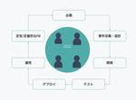

BASEプロダクトチームブログ
https://devblog.thebase.in/
ネットショップ作成サービス「BASE ( https://thebase.in )」、ショッピングアプリ「BASE ( https://thebase.in/sp )」のプロダクトチームによるブログです。
フィード

なぜフルサイクルエンジニアを目指すのか 2
2
BASEプロダクトチームブログ
はじめに BASE BANK Departmentで開発責任者をしている斉藤です。 BASE BANK Departmentは金融領域の事業を担当しています。 Departmentに在籍しているエンジニアは10名ほどです。 私たちは全員がフルサイクルエンジニアを目指しており、この記事ではその理由を紹介します。 フルサイクルエンジニアとは 私たちが考えるフルサイクルエンジニアとは、ソフトウェアライフサイクルの全域に責任を持ち、ユーザーに価値を届けることにフォーカスするエンジニアのことです。 先日、同僚のDoarakkoが書いた「フルサイクルエンジニアとしてどう事業に貢献するか」に記載のあった表現…
2日前

フルサイクルエンジニアとしてどう事業に貢献するか
BASEプロダクトチームブログ
はじめに こんにちは！ BASE BANK で、BASE を利用するショップオーナーさんが簡単に資金調達できるサービス「YELL BANK」の開発を担当している Doarakko です。 今回は BASE BANK が掲げているフルサイクルエンジニアという働き方の中で、YELL BANK の開発チームが実際にどのようなことを行なっているのかいくつか紹介します。 フルサイクルエンジニアとは これまでソフトウェアライフサイクルの各段階を分業、専門化していた状態から、よりスピーディにプロダクトアウトプットし続けるために一連の段階を価値提供に関わるエンジニア、チームが責任を持ち、実行できるようにしよう…
22日前
PHPerKaigi 2025にBASEのエンジニアが登壇＆ゴールドスポンサーとして協賛しました
BASEプロダクトチームブログ
はじめに BASE FeatureDev3Group でWebアプリケーションエンジニア をしている Capi です。 2025/3/21（金）- 3/23（日）の3日間、BASE株式会社もゴールドスポンサーとして協賛したPHPerKaigi 2025が開催されました。今回はPHPerKaigi 2025に参加したメンバーのコメントや感想をお届けします！ 現地参加メンバー PHPerKaigiとは PHPerKaigiは、オープンソースのスクリプト言語 PHP （正式名称 PHP:Hypertext Preprocessor）を使用している方、過去にPHPを使用していた方、これからPHPを使い…
1ヶ月前
PHPカンファレンス小田原2025にBASEのエンジニアが5人登壇＆松スポンサーとして協賛しました
BASEプロダクトチームブログ
2025年4月12日に開催されたPHPカンファレンス小田原2025に松スポンサーとして協賛し、BASEのエンジニアも5人登壇しました今回の記事では登壇スライドの紹介とカンファレンス内の様子をお届けします！
1ヶ月前
PHPカンファレンス小田原 2025にBASEのエンジニアが登壇＆松スポンサーとして協賛します
BASEプロダクトチームブログ
はじめに 2025/4/12（土）、おだわら市民交流センター「UMECO」で PHPカンファレンス小田原 2025が開催されます。 BASE株式会社は松スポンサーとしてPHPカンファレンス小田原 2025へ協賛しています。 PHPカンファレンス小田原 とは 「小田原の地でつながる、気張らないカンファレンス」をスローガンに、参加したエンジニアが新たな知識を共有し合い、互いに学び、成長できる場所をつくれるイベントです。 phpcon-odawara.jp PHPカンファレンス小田原のnoteでは深掘り情報も発信されています。 note.com 登壇メンバーのご紹介 PHPカンファレンス小田原 20…
1ヶ月前
Amazon Neptuneのブルーグリーンデプロイメントで発生したエラーと解決策
BASEプロダクトチームブログ
Amazon Neptuneのブルーグリーンデプロイメントで発生したエラーと解決策について共有します
1ヶ月前
GitHub Copilot Chatを使ってMock APIを高速に実装した話
BASEプロダクトチームブログ
はじめに はじめましての人ははじめまして、こんにちは！フロントエンドエンジニアのがっちゃん（ @gatchan0807 ）です！ 今回は、GitHub Copilot Chatを使った開発の中で実際に試してみたことと、そこから得られた気づきについて共有していきたいと思います。 （この作業を実施したのが2025年1月中頃の話なので、GitHub Copilot Agentモードが出る前の話である点だけご了承ください。2025年4月の今ならAgentモードでサクサク作らせていたと思いますし、直近はAgentモードで作ってPRを出したりしています🙏） やってみたこと 今回やってみたことはシンプルで、…
1ヶ月前
プロジェクトのリード経験を学びに変えるために、設計・プロジェクト推進のふりかえりをする勉強会を開催しました
BASEプロダクトチームブログ
はじめに こんにちは、BASE BANK Departmentで開発責任者をしている斉藤です。 今回はBASE BANKの開発チームで実施した「設計・プロジェクト推進のふりかえりをする勉強会」について紹介します。 設計・プロジェクト推進のふりかえりをする勉強会を開催しました この勉強会では実際にプロジェクトをリードしたメンバー(今回は私)が、設計の工夫やプロジェクト推進をふりかえり、それらをチームに共有する形式で行いました。 今回は、PAY.JP YELL BANKにおける初回調達のサービス利用料無料施策を題材に開催しました。 この施策はPAY.JP YELL BANKを初めて利用する方が、サ…
2ヶ月前
BASEショップに最適なカートバッジを実装するまでの試行錯誤
BASEプロダクトチームブログ
はじめに こんにちは！ BASEのカートチームでバックエンドエンジニアをしている、かがの（@ykagano）です！ みなさん、ECカートでよく見るこのバッジをご存知ですか？（右上の赤丸部分です） これはカートに商品がいくつ入っているかを示すカートバッジです。 このカートバッジはPay IDアプリではすでに表示されていますが、これまでBASEのWebショップには表示されていませんでした。 今回はこのカートバッジをWebのショップにリリースしましたので、そのお話をしたいと思います。 カートバッジの実装方法 カートバッジは以前、Webのショップでも一時期表示されていました。 しかし、表示の都度、DB…
2ヶ月前
PHPerKaigi 2025 にゴールドスポンサーとして協賛します
BASEプロダクトチームブログ
2025/3/21（金）- 3/23（日）の3日間、中野セントラルパークカンファレンス & ニコニコ生放送で PHPerKaigi 2025が開催されます。 BASE株式会社はゴールドスポンサーとしてPHPerKaigi 2025へ協賛しています。 phperkaigi.jp PHPerKaigiとは PHPerKaigiは、オープンソースのスクリプト言語 PHP （正式名称 PHP:Hypertext Preprocessor）を使用している方、過去にPHPを使用していた方、これからPHPを使いたいと思っている方、そしてPHPが大好きな方たちが、技術的なノウハウとPHP愛を共有するためのイベ…
2ヶ月前
PHPカンファレンス名古屋 2025にBASE BANKのエンジニアが登壇&スポンサーとして協賛しました
BASEプロダクトチームブログ
はじめに BASE BANK Division で フルサイクルエンジニア をしている02 （@cocoeyes02）です。 2025/02/22（土）に開催されたPHPカンファレンス名古屋 2025に登壇し、BASE社としてもブロンズスポンサーとして協賛しました。 今回の記事では登壇についてのコメントと、会場の様子についてお届けします！ 今回のセッションと協賛について 今回はLTでの登壇です。 speakerdeck.com LT始まりました！！！ #phpcon_nagoya pic.twitter.com/0DUiNYIYy4— PHPカンファレンス名古屋 (@phpcon_nagoya…
3ヶ月前
Developers Summit 2025に参加・登壇しました
BASEプロダクトチームブログ
はじめに BASE の Product Dev Division で Advanced Engineer のプログラミングをするパンダ（@Panda_Program）です。2年半間 Senior Engineer をやって、今は Advanced Engineer になりました。 今回ご縁を頂きまして Developers Summit（デブサミ）2025 に参加・登壇しました。登壇内容はスライドを公開しておりますのでこちらをご覧ください。 バックエンドエンジニアのためのフロントエンド入門 speakerdeck.com スライドの公開後にはてブのトレンド入りをしたり、スライドのPVが7,00…
3ヶ月前
PHPカンファレンス名古屋 2025にBASE BANKのエンジニアが登壇します & スポンサーとして協賛します
BASEプロダクトチームブログ
はじめに BASE BANK Department で開発責任者をしている斉藤です。 2025/2/22(土)に開催される PHPカンファレンス名古屋 2025にBASE BANKのエンジニアの02さんが登壇します。 加えて、BASE社としてもブロンズスポンサーとして協賛します。 phpcon.nagoya PHPカンファレンス名古屋2025 セッションの紹介 fortee.jp 2025/2/7にPHPUnit 12がリリースされました！ 今回のアップデートでは、25箇所以上の変更が行われました。 いくつかのメソッドやオプション、Attributeも削除されており、既存のテストコードに影響が…
3ヶ月前
「SREをはじめよう」の輪読会を実施しました!
BASEプロダクトチームブログ
はじめに BASE Dept. Product Devにてバックエンドエンジニアをしているオリバです。 2024年末、弊社のソフトウェアエンジニア（以下、SWE）でSREに興味を持つメンバーを募り、「SREをはじめよう」を題材にした輪読会を実施しました。本記事では、各部・各章の要点を整理し、実践に役立つ知見を共有します。 ※引用元: O'Reilly Japan SREをはじめよう 第1部 SRE入門 この部では、SREの定義やSREの文化のような、SREの概論に触れています。 SREの定義 書籍では、SREを以下で定義しています。 サイトリライアビリティエンジニアリングは、組織がシステム、サ…
4ヶ月前
数値と論理
BASEプロダクトチームブログ
はじめに こんにちは！BASE株式会社でPay IDチーム プロダクトマネージャーをしているbunです。 Pay IDは、BASEで作られたショップでのお買いものを楽しむためのショッピングサービスとクイックでスムーズな決済機能を提供しています。 去年1年を振り返ると、多くの失敗や思うようにいかないことが重なり、そのたびに内省をする時間を持つことが多かったです。その過程で強く大事だと感じたことは、プロダクトマネジメントで突き詰めるべきは「誰がなぜ幸せになるのか」を見失わないことです。 これまで数値と論理を武器にキャリアを積んできましたが、プロダクトづくりにおいてはそれらが最優先事項ではないシーン…
4ヶ月前
【令和最新版】今BASEに入社してやることあるの？という疑問に答えるよ
BASEプロダクトチームブログ
本記事はBASEアドベントカレンダー2024の24日目の記事です。 はじめに CTOの川口 (id:dmnlk) です。 昨日の記事は下記です、それぞれいい記事なんで読んでね。 今、リモートワークについて思うこと 統括マネージャー(EM of EM)の仕事7選 BASE社では現在もエンジニア採用を行っています。 その中でよく質問を頂くのは「BASEに今から入社した場合にやることはあるのか？」というものです。 ここまで読んだBASE開発ブログファンの方はお気づきかもしれませんが、こんな内容の記事を以前書きました。 今BASEに入社してやることあるの？という疑問に答えるよ この記事から3年経った今…
5ヶ月前
統括マネージャー(EM of EM)の仕事7選
BASEプロダクトチームブログ
本記事はBASEアドベントカレンダー2024の24日目の記事です。 はじめに こんにちは！BASE事業エンジニアチームにて責任者（エンジニアリングマネージャー）をしている植田です。いよいよアドベントカレンダーも今日を含めてラスト2日となりました。今日や明日クリスマスを楽しむ方も多いのではないでしょうか。 さて、私は今回、”統括マネージャー(EM of EM)”とはどういう仕事か、日々どんなことを考えて仕事をしているかをお届けしたくアドベントカレンダーを執筆しました。 想定読者は以下の方々になります。 現在エンジニアリングマネージャー(以下EM)をしていて今後EM of EMを目指していきたい方…
5ヶ月前
今、リモートワークについて思うこと
BASEプロダクトチームブログ
本記事は BASE アドベントカレンダー 2024 の 24 日目の記事です。 こんにちは、エンジニアリングマネージャーの松原(@simezi9)です。 新型コロナウイルスの流行に端を発する世の中の変動からもうじき5年が経過しようとしています。 当時の感染対策の流れで多くの企業がリモートワーク制度の導入を進めました。この記事を読んでいる方の中にもそのタイミングではじめてリモートワークに取り組んだ方も多いのではないでしょうか。 私もその当時に、BASE株式会社のリモートワークへの取り組みをエントリとして公開したことがありました。 参考：エンジニアのリモートワーク in BASE このエントリを書…
5ヶ月前
PHP Conference Japan 2024 に参加しました!
BASEプロダクトチームブログ
はじめに BASEのProductDev でエンジニア をしています enduです。 本記事は BASE アドベントカレンダー 2024 の 23 日目の記事です! 昨日は @zan_sakuraiさんで 「今年の記事をふりかえってみた」でした! 記事の中で「イベントレポート・スポンサー・登壇に関する記事が多かった」とありましたが、この記事もイベントレポート記事になります! 2024年を締めくくるイベントという事で2024/12/22（日）に開催された 「PHP Conference Japan 2024」の参加レポート記事をご紹介します! BASEのスポンサーブースの紹介につて 前回のテック…
5ヶ月前
不均衡データにおけるROC曲線とPR曲線について
BASEプロダクトチームブログ
はじめに こんにちは。BASEのDataStrategyチームで機械学習を触っている竹内です。 機械学習といえばLLMやDiffusionモデルなど生成モデルの発展が目覚ましい昨今ですが、その一方で構造化データに対して特徴量エンジニアリングを行い、CVを切って、LightGBMなどの便利な決定木ベースのフレームワークに投げて、できたモデルの出力を吟味し、時には致命的なリークに気付き頭を抱えるといった王道のアプローチは相変わらず現役で、実務に関していえば当分お世話になる機会が減ることはないかなという気がしています。 今回はそういったクラス分類モデルにおける性能の評価指標の1つである、ROC曲線や…
5ヶ月前
今年の記事をふりかえってみた
BASEプロダクトチームブログ
本記事は BASE アドベントカレンダー 2024 の 22 日目の記事です。 はじめに こんにちは！ BASE 株式会社 Pay ID 兼 BASE PRODUCT TEAM BLOG 編集局メンバー の @zan_sakurai です。 今年も残すところあとわずかとなりました。今年も多くの方に BASE PRODUCT TEAM BLOG ご覧いただき、ありがとうございました！ 1 年間 BASE PRODUCT TEAM BLOG 編集局としていろいろな記事のレビューに関わらせていただきました。 この機会に改めて今年の記事を全て読み返したので、せっかくなので、今年の記事を振り返ってみたい…
5ヶ月前
プロダクトマネージャーは 「面白がり力」があると良い
BASEプロダクトチームブログ
はじめに この記事はBASEアドベントカレンダーの21日目の記事です。 こんにちは！BASE株式会社でPay IDチーム プロダクトマネージャーグループのマネージャーをしているkumaです。 Pay IDは、BASEで作られたショップでのお買いものを楽しむためのショッピングサービスで、クイックでスムーズな決済機能と、ショッピングアプリを提供しています。 本記事ではフィンテックドメイン未経験からフィンテックプロダクトのPMを1年半ほど経験して感じた「プロダクトマネージャーとして何でも面白がる、面白がり力」の重要性を話します。 ドメイン知識を身につけるのはなかなか大変 プロダクトを成功させるために…
5ヶ月前
(仮)エンジニアと非エンジニアで足並み揃えるPJ進行
BASEプロダクトチームブログ
この投稿はBASEアドベントカレンダー2024の21日目の記事です。 はじめに SRE Group でエンジニア？をしている@basemsです。 まだ入社して5ヶ月の若輩者です。 「エンジニア？」という表現は、私の現状は技術そのものではなくチーム運営だったり業務改善といった方向に注力しているので、まだ「BASEのエンジニアです！」と自信を持って名乗る程ではないという心理の表れです。 本記事はエンジニアとしてというより、過去の経験からくるプロジェクトマネジメントの面が強い内容になっております。 この記事って何 私自身、BASE以前に何社か渡り歩いていますが、PJ進行においてエンジニアと非エンジニ…
5ヶ月前
Next.jsのServer Actionとreact-hook-formでフォームを実装した
BASEプロダクトチームブログ
はじめに 本記事はBASEアドベントカレンダー2024の20日目の記事です。 Pay IDのフロントエンドエンジニアをしているnojiです。 以前執筆した システムリニューアルでNext.jsのApp Router/Server Actionを使って便利だと思ったところ に記載したように、Pay IDのアカウント管理画面ではNext.jsを採用し、Server Actionを活用しています。 今回は、そのServer Action導入時に行ったフォームバリデーション周りの取り組みについて紹介します。 react-hook-formを使ったフォームバリデーション アカウント管理画面の特性上、ログ…
5ヶ月前
アジャイル組織のデザイナーがやってきたチームビルディングの話
BASEプロダクトチームブログ
この記事はBASEアドベントカレンダー2024の19日目の記事です。 同じく19日目には住所の奥深さを知れるPay IDのエンジニアの金子さんの記事も公開されていますので、ぜひご一緒にお楽しみください！ 自己紹介 プロダクトデザイナーのichiです。BASEに入社してから21ヶ月が経ち、入社時からBASE BANKチームの一員として金融プロダクトの開発に取り組んでいます。 社内では「お祭り小僧」として、会社主催の忘年会やチーム懇親会の幹事として企画や運営を担当したり、イベントに参加しやすい雰囲気づくりを心がけてきました。 また、今回のアドベントカレンダーのOGP画像もその一環で制作協力させてい…
5ヶ月前
Pay ID 3回あと払いの開発をきっかけに知る住所の味わい深さ
BASEプロダクトチームブログ
本記事はBASEアドベントカレンダー2024の19日目の記事です。 はじめに こんにちは、Pay IDのエンジニアの金子です。普段は「Pay ID あと払い」の決済サービスのバックエンドを中心に開発を担当しています。 10月末に「Pay ID 3回あと払い」の機能をリリースしました。「Pay ID 翌月あと払い」に続き、新たな決済手段として使用可能になっています。 今回は、Pay ID 3回あと払い機能の実装をきっかけに住所の深さを知ることになったので、それについて話せればと思います。 Pay ID 3回あと払いとは 「Pay ID 3回あと払い」とは、Pay IDアカウントでのお買いものを、…
5ヶ月前
PhpStorm で PHPUnit をずっと実行している話
BASEプロダクトチームブログ
この記事はBASEアドベントカレンダー2024の18日目の記事です。18日目は shota.imazeki さんの記事（INFORMATION_SCHEMAを用いたBigQueryデータ監視 - BASEプロダクトチームブログ）も公開されていますので、ぜひご一緒に読んでみてください。 はじめに こんにちは、はじめまして。BASE の Feature Dev1 Group でバックエンドエンジニアをしている @meihei です。 2024年6月に入社してから半年が経ち、この間に多くの経験を積ませていただきました。 この記事では、私の日常の開発業務、特にローカル環境で PHPUnit を自動的・…
5ヶ月前
INFORMATION_SCHEMAを用いたBigQueryデータ監視
BASEプロダクトチームブログ
はじめに こんにちは！Data Strategy teamでデータエンジニアをしているshota.imazekiです。 今回はBigQueryでのINFORMATION_SCHEMAを用いたBigQueryデータ監視というテーマでブログを書いていこうと思います。 BigQueryを利用していく上で「クエリが実行できなくなった」「データが古いまま更新されていない」「使われていないデータがある」などの様々な運用上の課題があるかと思います。それをINFORMATION_SCHEMAで使って簡単に解決していこうという話です。 BASEの分析基盤 まず前提としてBASEの分析基盤を簡単に紹介します。BA…
5ヶ月前
Jetpack Compose上でのconstraintLayoutの利用事例紹介
BASEプロダクトチームブログ
この記事は BASE アドベントカレンダー 17日目の記事です。 はじめに Pay IDアプリチームの小林です。「ショッピングアプリ Pay ID」のAndroidアプリを開発しています。 今回はJetpack ComposeでConstraintLayoutを使った事例紹介をしたいと思います。 ConstraintLayoutとは まず、ConstraintLayoutとは、複雑なレイアウト、特に相対的なレイアウトを書きたいときに使うことになるクラスです。 始まりはComposeによるレイアウト作成の前、XMLにてレイアウトを書いていた頃に登場しました。 その頃はXMLだったので、複雑なレイ…
5ヶ月前